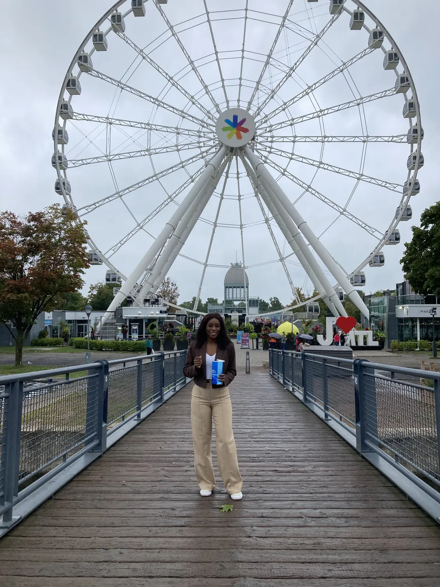
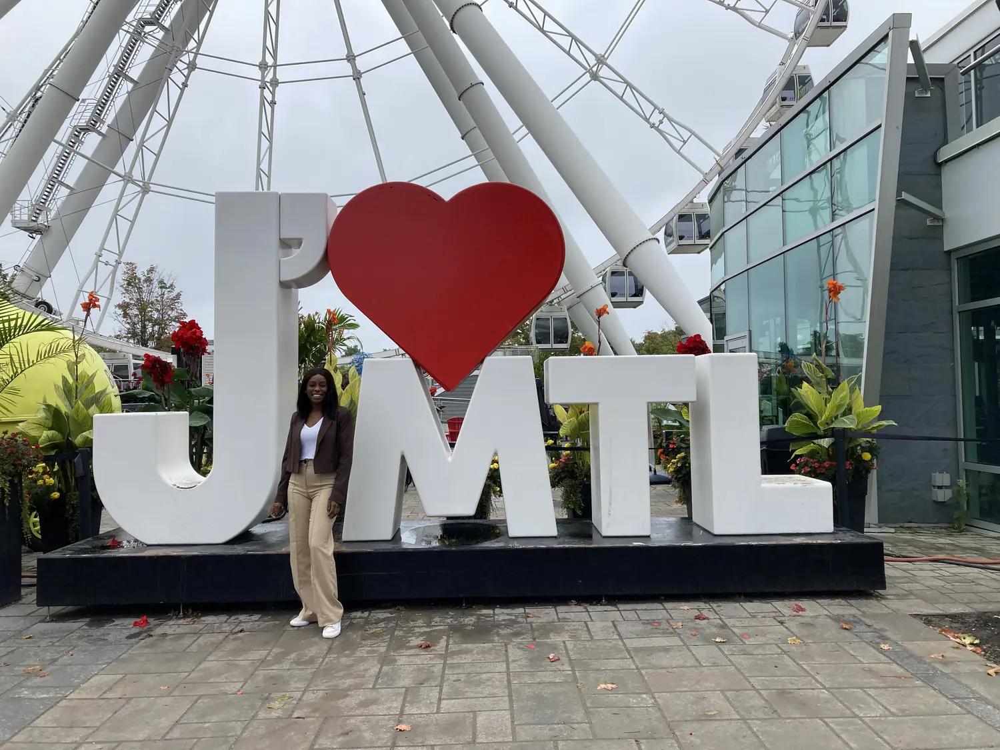

By the river01
The Old Port & La Grande Roue
📍 Vieux-Port de Montréal
The Old Port is where we always start. It's a gorgeous stretch of waterfront along the St. Lawrence — cobblestones, patios, the big Grande Roue observation wheel (the tallest in Canada, with a view over the whole city), and the classic "J ❤ MTL" sign for the obligatory photo. Ride the wheel at golden hour, then hop on a river cruise to see the skyline and Habitat 67 from the water.
Best skyline viewsPhoto-op central